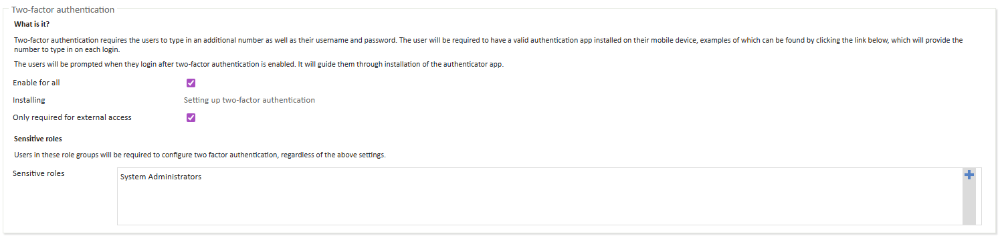
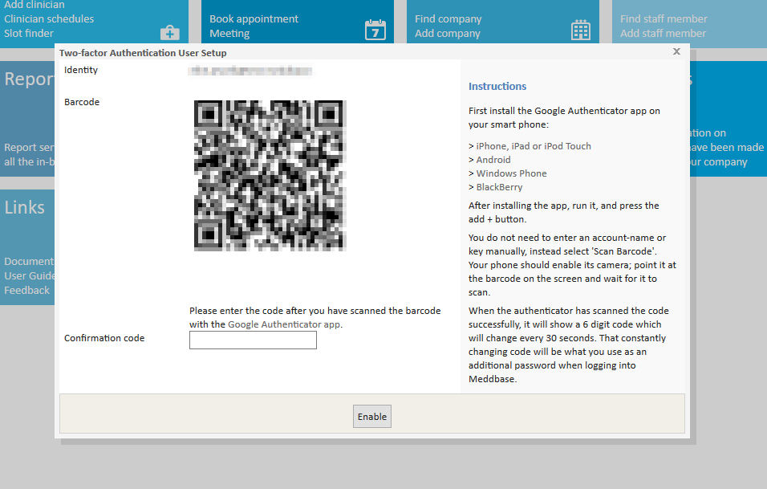

Meddbase can enable Two-Factor Authentication to users accessing the chamber. Two-factor authentication adds an additional layer of security to your chamber. If enabled, each user will require their username and password - as well as a unique code sent to a smartphone to log in to Meddbase. This makes it more difficult for someone else to access your system.
If enabled, each user will be required to enter a six-digit code in addition to their user name and password to log in.
The purpose of this article is to explain how to enable and use Two Factor Authentication (2FA) within your chamber. This article is split into the following sections:
Two-factor authentication must be enabled within Meddbase to come into effect. To enable/disable two-factor authentication:
If Enable for all is checked, check the Only required for external access checkbox to only require a code when accessing Meddbase from external IP addresses Meddbase. When enabled, you must configure the IP addresses that Meddbase considers internal (that will not require 2FA) in Admin > Configuration > External IPs considered internal.
If certain roles should be forced to use 2FA, those roles can be added to the Sensitive roles list. For example, only System Administrators. Sensitive roles can be set regardless of whether Enable for all or Only required for external access are checked.

Meddbase works with authenticator applications to provide the six-digit code required to log in. Follow the links below for instructions to install one of the authenticator apps:
Once an authenticator application is installed, log in to Meddbase and do the following:

To log in, you must have first linked your smartphone to your Meddbase account. Once linked, do the following:
If you don't have your smartphone at hand, ask an administrator to reset your code. This means that you won't need to enter a code the next time you log in, but you will need to re-link your smartphone to your Meddbase account once you have access.